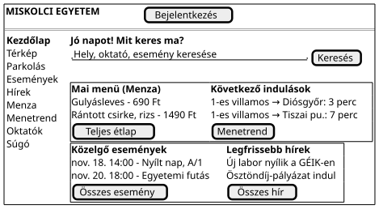
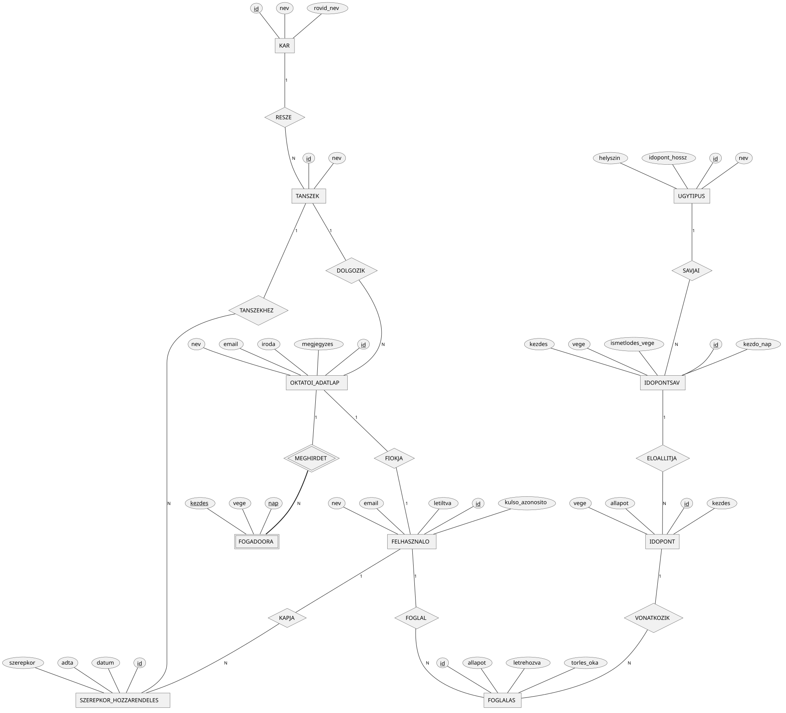
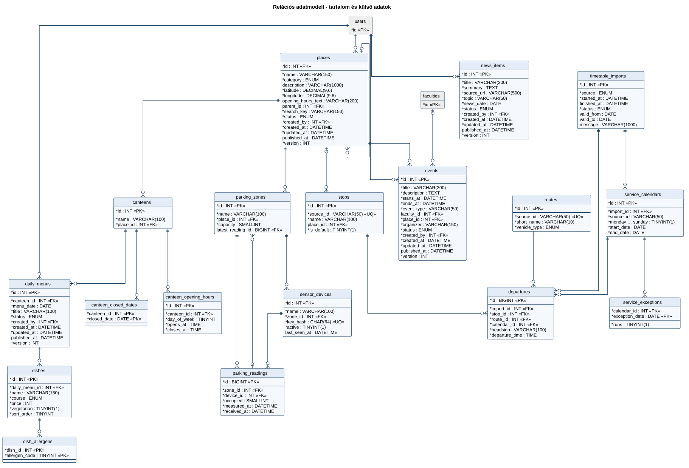
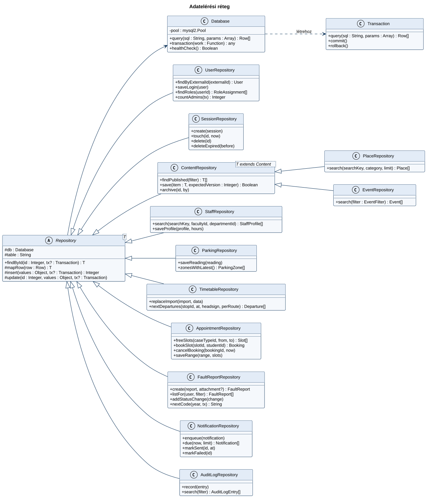
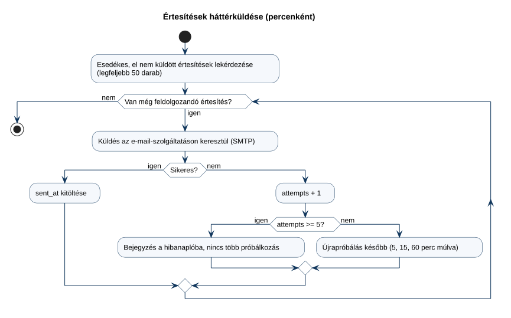
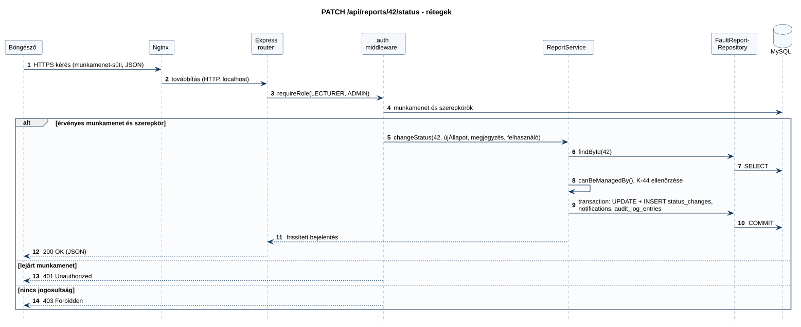

Címlap
Csoport neve: ME-nthetetlenek
Feladat sorszáma: 19
Feladat címe: Az uni-app jelenlegi funkcióinak gyakorlatiasabb átdolgozása
Rendszertervezés
Gyakorlatvezető:
Tompa Tamás
Csoporttagok:
| Név | Tankör | E-mail-cím |
|---|---|---|
| Csoportvezető: Dávid Gergő | G2-BP1 | gergo.david@student.uni-miskolc.hu |
| Győri Kristóf | G2-BP1 | kristof.gyori@student.uni-miskolc.hu |
| Maklári Máté | GE-BGI | mate.mate.165@gmail.com |
| Balázs Csenge Málna | GE-BGI | csenge.balazs.malna@student.uni-miskolc.hu |
| Nagy Virág | GE-BGI | virag.nagy@student.uni-miskolc.hu |
Beadás dátuma: 2026. 11. 16.
Történet
| Dátum | Verzió | Leírás | Szerző |
|---|---|---|---|
| 2026. 11. 16. | 1.0 | Első változat: felhasználói felület, adatbázis-kezelő, szemantikai és relációs adatmodell, adatelérési osztályok, a funkcionális modell kiegészítése, architektúra, REST API. | ME-nthetetlenek |
Tartalomjegyzék
- 1. Bevezetés
- 2. Felhasználói felület
- 2.1 Elrendezés és arculat
- 2.2 Képernyők és navigáció
- 2.3 Képernyőtervek
- 2.4 Űrlapok ellenőrzése és hibaüzenetek
- 2.5 Visszajelzések és állapotok
- 3. Adatmodellek
- 3.1 Az adatbázis-kezelő kiválasztása
- 3.2 Szemantikai adatmodell
- 3.3 Relációs adatmodell
- 3.4 Az adatbázis-kezelővel kapcsolatot tartó osztályok
- 4. A funkcionális modell kiegészítése
- 4.1 Egyidejű foglalás
- 4.2 Egyidejű tartalomszerkesztés
- 4.3 Értesítések küldése
- 4.4 Jogosultság-ellenőrzés és hibakezelés
- 4.5 Külső szolgáltatások kiesése
- 5. Architektúra és telepítés
- 6. A REST API végpontjai
- 7. A forráskód szerkezete
- 8. Mellékletek
1. Bevezetés
Ez a dokumentum a Vezérlőpult rendszertervét tartalmazza: a felhasználói felület tervét, az adatbázis-kezelő kiválasztását, a szemantikai és a relációs adatmodellt, az adatbázissal kapcsolatot tartó osztályok tervét, a funkcionális modell kivételes és alternatív folyamatainak kiegészítését, valamint a megvalósításhoz szükséges további döntéseket (architektúra, telepítés, REST API, forráskód-szerkezet).
A dokumentum az SRS követelményeire és az analízis modell 1.1-es verziójára épül. Az osztályok nevei az analízis modell neveivel egyeznek; az adatbázistáblák és -oszlopok az SRS 7.2 elnevezési konvenciója szerint angol, kisbetűs, aláhúzásjellel tagolt nevek, a táblák többes számban (például FaultReport → fault_reports).
Felépítés. A 2. fejezet a felhasználói felületet, a 3. az adatmodelleket, a 4. a funkcionális modell kiegészítését írja le. Az 5–7. fejezet a részletes tervezés további eredményeit tartalmazza (architektúra és telepítés, REST API, forráskód-szerkezet), a 8. a mellékleteket.
2. Felhasználói felület
2.1 Elrendezés és arculat
A felület az SRS 11.1 pontja szerint a projekt dokumentációs oldalának elrendezését követi, így a csapat által már elkészített stíluselemek (style.css, Tailwind CSS) újrahasznosíthatók:
- Fejléc (60 px magas, sötétkék,
#0b1a29): bal oldalon az egyetem neve (a kezdőlapra mutat), jobb oldalon a „Bejelentkezés” gomb, bejelentkezés után a felhasználó neve lenyíló menüvel (saját oldalak, kijelentkezés). - Nemzeti színű csík a fejléc alatt (piros–fehér–zöld, 2 px).
- Bal oldali menü (256 px széles,
#10365c): ikon és felirat minden menüpontnál (SRS 4.3); az aktív menüpontot világoskék bal oldali sáv és világosabb háttér jelzi. A menüpontok listája a szerepkörtől függ (lásd 2.2). - Tartalomterület világosszürke háttéren (
#f0f2f5), fehér kártyákkal. - Reszponzív viselkedés: 768 px alatt a menü rejtett, a fejléc bal oldali gombjával nyitható; a kártyák és a táblázatok egy oszlopba rendeződnek, a széles táblázatok vízszintesen görgethetők. A felület 360 px szélességtől használható (SRS 4.6).
- Akadálymentesség: szemantikus HTML-elemek (header, nav, main), látható fókusz, minden ikonhoz szöveges címke, a színjelölések mellett szöveg is (például „Kevés hely”). A kontraszt a WCAG 2.1 AA szintnek megfelel (SRS 4.6).
2.2 Képernyők és navigáció
A képernyők listáját az SRS 11.1 táblázata adja. Az alábbi ábra a köztük lévő átmeneteket mutatja szerepkörönként.
A képernyők és a köztük lévő átmenetek szerepkörönként. A bal oldali menüből minden nyilvános képernyő egy kattintással elérhető; a bejelentkezést igénylő képernyők csak a megfelelő szerepkörrel jelennek meg a menüben. A szaggatott nyilak a képernyők közötti hivatkozásokat jelölik (például az esemény helyszínéről a térképre).

1. ábra. A felhasználói felület navigációs térképe. Megnyitás teljes méretben
| Menüpont | Látja | Use case-ek |
|---|---|---|
| Kezdőlap, Térkép, Parkolás, Események, Hírek, Menza, Menetrend, Oktatók, Súgó | mindenki | UC-03 – UC-09, UC-19 |
| Ügyintézés (Új foglalás, Foglalásaim), Hibabejelentés (Új bejelentés, Bejelentéseim) | hallgató, oktató | UC-11 – UC-14, UC-21, UC-22 |
| Oktatói adatlapom (a fejléc névmenüjében) | oktató | UC-10 |
| Bejelentések kezelése | oktató, adminisztrátor | UC-17, UC-21, UC-23 |
| Adminisztráció (Tartalom, Időpontok, Felhasználók, Napló) | adminisztrátor | UC-15, UC-16, UC-18, UC-24 |
Az UC-01 Bejelentkezés és az UC-02 Kijelentkezés a fejlécből érhető el. Az UC-20 Értesítés küldése nem kapcsolódik képernyőhöz: az e-mailt a rendszer küldi (lásd 4.3). Az UC-19 – UC-24 az SRS 0.4-es változatának «include», illetve «extend» kapcsolattal bevezetett use case-ei; önálló menüpontjuk nincs, a táblázatban annál a képernyőnél szerepelnek, amelyről elérhetők.
A felület egyoldalas alkalmazásként (single-page application) működik: a menüpontok a cím # utáni részét változtatják (például #/esemenyek), így a böngésző „Vissza” gombja és a könyvjelzők is működnek, az oldal pedig nem töltődik újra. Védett képernyőnél, ha nincs munkamenet, a felület a bejelentkezést indítja, és utána a kért képernyőre tér vissza (UC-01 A1).
2.3 Képernyőtervek
A legfontosabb képernyők drótvázai. A drótváz az elemek elrendezését és feliratait mutatja, a végleges színeket és ikonokat a 2.1 pont adja meg. A többi képernyő ugyanezekből az elemekből épül fel (lista szűrőkkel, adatlap, űrlap).
A kezdőlap drótváza. A fejléc, a bal oldali menü és a tartalomterület elrendezése minden képernyőn azonos (SRS 11.1). A kártyák a leggyakoribb funkciókat mutatják; mobilon egymás alá kerülnek, a menü pedig a fejléc gombjával nyílik.

2. ábra. Képernyőterv: Kezdőlap (asztali nézet). Megnyitás teljes méretben
Az időpontfoglalás három lépése egy képernyőn: ügytípus, időpont, összegzés. A naptárban csak a szabad időpontok kattinthatók; a foglalás gomb csak az összegzés után aktív.

3. ábra. Képernyőterv: Új foglalás (UC-11). Megnyitás teljes méretben
A hibabejelentés űrlapja. A kötelező mezőket csillag jelöli; a hibaüzenet a hibás mező alatt jelenik meg, és megmondja, mit kell javítani (SRS 9.3). A helyszín a térképen is kijelölhető.

4. ábra. Képernyőterv: Új hibabejelentés (UC-13). Megnyitás teljes méretben
A felelősök listanézete szűrőkkel és a kiválasztott bejelentés részletei. Elutasításnál a megjegyzés mező kötelező (K-44).

5. ábra. Képernyőterv: Bejelentések kezelése (UC-17). Megnyitás teljes méretben
2.4 Űrlapok ellenőrzése és hibaüzenetek
Minden űrlapot a felület és a szerver is ellenőriz: a felület azonnali visszajelzést ad, a szerver pedig a végső döntést hozza, mert a felületi ellenőrzés megkerülhető. A hibaüzenet a mező alatt jelenik meg, és megmondja, mit kell javítani (SRS 9.3). A legfontosabb szabályok:
| Űrlap | Mező | Szabály | Hibaüzenet |
|---|---|---|---|
| Új foglalás | Időpont | kötelező; szabad | „Válasszon egy szabad időpontot.” |
| Új bejelentés | Kategória, épület | kötelező | „Válassza ki a hiba kategóriáját.” / „Adja meg az épületet.” |
| Leírás | 10–2000 karakter | „Legalább 10 karakterben írja le a hibát.” | |
| Kép | JPEG vagy PNG, legfeljebb 5 MB | „Csak JPEG vagy PNG kép tölthető fel, legfeljebb 5 MB méretben.” | |
| Oktatói adatlap | Fogadóóra | kezdés < befejezés; ugyanazon a napon nincs átfedés | „A kezdés legyen korábbi a befejezésnél.” / „Ez az idősáv átfed egy másikkal.” |
| Tartalom | Cím | kötelező, legfeljebb 200 karakter | „Adja meg a címet.” |
| Esemény időpontja | kezdés < befejezés | „Az esemény vége nem lehet korábbi a kezdeténél.” | |
| Hír hivatkozása | érvényes https:// cím | „Adjon meg érvényes webcímet (https://…).” | |
| Időpontsáv | Sáv | nincs átfedés ugyanazon ügytípusnál | „A sáv átfed egy meglévő sávval: (nap, idő).” |
| Szerepkörök | Tanszék | oktatói szerepkörnél kötelező | „Oktatói szerepkörhöz válasszon tanszéket.” |
| Bejelentés kezelése | Megjegyzés | elutasításnál kötelező | „Elutasításkor adja meg az indoklást.” |
2.5 Visszajelzések és állapotok
- Betöltés: a lista helyén szürke helykitöltő sorok; 1 másodpercnél hosszabb művelet gombján „Folyamatban…” felirat, a gomb ilyenkor nem kattintható (így nem jön létre kétszer ugyanaz a foglalás vagy bejelentés).
- Üres lista: megmondja a következő lépést, például „Még nincs bejelentése. Új bejelentés” (SRS 4.3).
- Hiba: rövid magyar nyelvű üzenet és „Újra” gomb; a kitöltött űrlap adatai megmaradnak (UC-10 E2, UC-13 E3).
- Siker: zöld sáv a tartalomterület tetején 5 másodpercig, például „A foglalás rögzítve.”
- Megerősítés: párbeszédablak a visszafordíthatatlan műveletek előtt (foglalás lemondása, foglalt időpont törlése, szerepkör visszavonása, kijelentkezés mentetlen adattal).
- Adatfrissesség: „nem friss” és „nincs adat” jelzés a parkolásnál és a menetrendnél, a legutóbbi frissítés idejével (K-13, UC-08 E1).
3. Adatmodellek
3.1 Az adatbázis-kezelő kiválasztása
Az adatbázis-kezelő a MySQL 8.0 Community Server (SRS 8.1). A döntés indokai: a csapat az Adatbázis-kezelés tárgyból ismeri; ingyenes (GPLv2, saját szerveren futtatva nincs további kötelezettség); a tervezett adatmennyiség (1 GB alatt, SRS 6.3) és terhelés (100 kérés másodpercenként, SRS 6.2) jóval a képességein belül van; és támogatja a rendszerhez szükséges tranzakciókat, idegen kulcsokat és egyedi indexeket.
| Szempont | Döntés |
|---|---|
| Tárolómotor | InnoDB minden táblánál (tranzakciók, sorszintű zárolás, idegen kulcsok). |
| Karakterkészlet | utf8mb4, rendezés utf8mb4_hungarian_ci, így a nevek a magyar ábécé szerint rendeződnek. |
| Időpontok | Az adatbázisban UTC-ben, DATETIME típusban; a felület magyarországi helyi időben jeleníti meg őket (SRS 5.4). |
| Kapcsolat az alkalmazással | A mysql2 csomag (SRS 10) ígéret alapú felülete, kapcsolatkészlettel (legfeljebb 10 egyidejű kapcsolat). Minden lekérdezés előkészített, paraméterezett utasítás (execute); SQL szövegösszefűzéssel nem készül (SRS 7.1). |
| Adatbázis-felhasználók | vp_app: az alkalmazás, csak SELECT, INSERT, UPDATE, DELETE joggal (a naplótáblára csak INSERT és SELECT); vp_migrate: a sémamódosításokhoz; vp_backup: csak olvasás a mentéshez. A jelszavak környezeti változókban vannak (SRS 7.6). |
| Sémaváltozások | Számozott SQL-migrációs fájlok a Git-tárolóban (db/migrations); a lefutottakat a schema_migrations tábla tartja nyilván. |
| Mentés | Naponta mysqldump, 14 napig megőrizve; a feltöltött képek hetente (SRS 5.5). |
A feltöltött képek nem az adatbázisban, hanem a szerver lemezén vannak (az attachments tábla csak a helyüket tárolja), mert így az adatbázis kicsi marad, és a mentése gyors.
3.2 Szemantikai adatmodell
A szemantikai adatmodell az analízis modell osztályaiból készült: az adatot tároló osztályokból egyedek, a kapcsolataikból kapcsolatok lettek. A felsorolás típusok (például a szerepkör vagy az állapotok) egyszerű tulajdonságok. A modellt három ábrára bontottuk; az ábrák között közös egyedek (FELHASZNALO, HELY, TANSZEK) kötik össze a részeket. Az ábrákon csak a fontosabb tulajdonságok szerepelnek; a teljes oszloplistát a relációs modell adja meg.
Modellezési döntések:
- Gyenge egyedek: a FOGADOORA és az ELOZMENY csak a tulajdonosával (oktatói adatlap, illetve bejelentés) együtt azonosítható, ezért gyenge egyed (dupla keret), azonosító kapcsolattal (dupla rombusz).
- Kapcsolatból egyed: a szerepkör-hozzárendelésnek és a foglalásnak saját tulajdonságai vannak, és más adatok hivatkoznak rájuk (értesítések), ezért önálló egyedek, nem csak kapcsolatok.
- Többértékű tulajdonság: a menza zárva tartási napjai és az étel allergénjei (dupla ellipszis).
- Összetett tulajdonság: a hely koordinátája (szélesség, hosszúság).
- Származtatott tulajdonság: a parkolózóna szabad helyeinek száma (szaggatott ellipszis); nem tároljuk.
- Háromágú kapcsolat: a hozzárendelési szabály egy kategória és egy épület párosához egy felelős egységet rendel.
- Általánosítás: a Content bázisosztálynak nincs külön egyede; a négy tartalomfajta önálló egyed (lásd 3.3.2).
Az egyedek, a kapcsolatok és a fontosabb tulajdonságok Chen-féle jelöléssel. A kulcstulajdonság aláhúzva, a kapcsolatok számossága a vonalakon látható (1, N). A szerepkör-hozzárendelés önálló egyed, mert saját tulajdonságai vannak, és oktatói szerepkörnél egy tanszékhez is kapcsolódik. A foglalás szintén önálló egyed, mert az értesítések hivatkoznak rá.

6. ábra. Szemantikai adatmodell (ER) – felhasználók, szervezet és ügyintézés. Megnyitás teljes méretben
A tartalmak és a külső forrásból érkező adatok egyedei. A zarva_tartas és az allergen többértékű tulajdonság (dupla ellipszis), a szabad_helyek származtatott tulajdonság (szaggatott ellipszis): nem tároljuk, a kapacitásból és a legutóbbi mérésből számoljuk.

7. ábra. Szemantikai adatmodell (ER) – tartalom és külső adatok. Megnyitás teljes méretben
A hibabejelentés egyedei. A HOZZARENDELESI_SZABALY háromágú kapcsolat: egy kategória és egy épület párosához egy felelős egységet rendel. Az ELOZMENY gyenge egyed, csak a bejelentéssel együtt létezik.

8. ábra. Szemantikai adatmodell (ER) – hibabejelentés. Megnyitás teljes méretben
3.3 Relációs adatmodell
3.3.1 Az átalakítás szabályai
A szemantikai modellt a következő szabályokkal alakítottuk relációs modellé:
- Minden (erős) egyedből tábla lesz; az elsődleges kulcs mesterséges, automatikusan növekvő egész szám (
id). A természetes azonosítók (például a bejelentéscodemezője vagy az Entra-azonosító) egyedi indexet kapnak. - Az 1:N kapcsolat az N oldali táblában idegen kulcs lesz (például
events.place_id). Ha a kapcsolat nem kötelező, az idegen kulcs NULL értéket is felvehet. - Az 1:1 kapcsolat idegen kulcs egyedi indexszel (például
staff_profiles.user_id,attachments.report_id). - A gyenge egyed táblája a tulajdonos kulcsát idegen kulcsként tartalmazza, törléskor vele együtt törlődik (
ON DELETE CASCADE). Az egyszerűbb hivatkozás kedvéért mesterségesidkulcsot is kapott. - A többértékű tulajdonságból külön tábla lesz a tulajdonos kulcsával és az értékkel, összetett elsődleges kulccsal (
canteen_closed_dates,dish_allergens). - Az összetett tulajdonság részei külön oszlopok (
latitude,longitude); a származtatott tulajdonság nem kerül táblába. - A háromágú kapcsolatból három idegen kulcsot tartalmazó tábla lesz (
assignment_rules). - A rögzített értékkészletű tulajdonságok (szerepkör, állapotok)
ENUMtípusúak; a bővíthető listák (bejelentési kategóriák, felelős egységek) saját táblát kaptak, hogy az adminisztrátor kódmódosítás nélkül bővíthesse őket.
3.3.2 Az általánosítás leképezése
A Content bázisosztály és a négy leszármazottja (NewsItem, Event, Place, DailyMenu) leképezésére három lehetőség van: egyetlen tábla az egész hierarchiának, külön tábla a bázisosztálynak és a leszármazottaknak, vagy csak a konkrét osztályoknak egy-egy tábla. Az utóbbit választottuk: a négy tartalomfajtát a rendszer sosem kérdezi le együtt, így nincs szükség összekapcsolásra, és nem keletkezik sok üres oszlop. A közös oszlopok (status, created_by, created_at, updated_at, published_at, version) mind a négy táblában megvannak; egységes kezelésüket a közös ContentRepository osztály végzi (3.4).
3.3.3 A táblák áttekintése
A táblák az elsődleges kulccsal (PK), az idegen kulcsokkal (FK) és az egyedi (UQ) oszlopokkal. A csillag a kötelező (NOT NULL) oszlopot jelöli. A vonalak végén a „szarvasláb” a több oldalt jelzi.

9. ábra. Relációs adatmodell – felhasználók, szervezet és ügyintézés. Megnyitás teljes méretben
A tartalom és a külső adatok táblái. A négy tartalomtábla (places, news_items, events, daily_menus) mindegyike tartalmazza a Content bázisosztály oszlopait (status, created_by, created_at, updated_at, published_at, version); ezeket az áttekinthetőség kedvéért az ábra is mutatja.

10. ábra. Relációs adatmodell – tartalom és külső adatok. Megnyitás teljes méretben
A hibabejelentés táblái. A report_code_counters tábla az éven belüli sorszámot adja ki az azonosítóhoz.

11. ábra. Relációs adatmodell – hibabejelentés. Megnyitás teljes méretben
3.3.4 A táblák leírása
Az alábbi táblák minden oszlopot tartalmaznak. Jelölések: PK – elsődleges kulcs, FK – idegen kulcs (a nyíl után a hivatkozott tábla), UNIQUE – egyedi, GENERATED – az adatbázis által számolt oszlop. Minden DATETIME érték UTC-ben értendő.
Felhasználók, szervezet és ügyintézés
users – az analízis modell User osztályából
| Oszlop | Típus | Megszorítás | Leírás |
|---|---|---|---|
id | INT UNSIGNED | PK, AUTO_INCREMENT | Belső azonosító. |
external_id | VARCHAR(64) | NOT NULL, UNIQUE | Entra ID objektumazonosító. |
name | VARCHAR(150) | NOT NULL | Név. |
email | VARCHAR(254) | NOT NULL, UNIQUE | Egyetemi e-mail-cím. |
disabled | TINYINT(1) | NOT NULL DEFAULT 0 | Letiltott fiók. |
disabled_reason | VARCHAR(500) | NULL | A letiltás oka. |
first_login_at | DATETIME | NOT NULL | Első belépés. |
last_login_at | DATETIME | NOT NULL | Utolsó belépés. |
role_assignments – az analízis modell RoleAssignment osztályából
| Oszlop | Típus | Megszorítás | Leírás |
|---|---|---|---|
id | INT UNSIGNED | PK, AUTO_INCREMENT | |
user_id | INT UNSIGNED | NOT NULL, FK → users | A felhasználó. |
role | ENUM('STUDENT','LECTURER','ADMIN') | NOT NULL | Szerepkör. |
department_id | INT UNSIGNED | NULL, FK → departments | Oktatónál kötelező (alkalmazásszintű ellenőrzés). |
granted_by | INT UNSIGNED | NULL, FK → users | Az adományozó adminisztrátor. |
granted_at | DATETIME | NOT NULL |
UNIQUE (user_id, role): egy szerepkör egyszer.
sessions – az analízis modell Session osztályából
| Oszlop | Típus | Megszorítás | Leírás |
|---|---|---|---|
id | CHAR(64) | PK | A munkamenet-azonosító SHA-256 kivonata; maga az azonosító csak a sütiben van. |
user_id | INT UNSIGNED | NOT NULL, FK → users | |
created_at | DATETIME | NOT NULL | |
last_activity_at | DATETIME | NOT NULL | A 30 perces lejárat ebből számolódik. |
return_url | VARCHAR(500) | NULL |
INDEX (last_activity_at): a lejárt munkamenetek óránkénti törléséhez.
audit_log_entries – az analízis modell AuditLogEntry osztályából
| Oszlop | Típus | Megszorítás | Leírás |
|---|---|---|---|
id | BIGINT UNSIGNED | PK, AUTO_INCREMENT | |
actor_id | INT UNSIGNED | NOT NULL, FK → users | |
action | VARCHAR(50) | NOT NULL | Művelet kódja. |
entity_type | VARCHAR(50) | NOT NULL | |
entity_id | INT UNSIGNED | NOT NULL | |
details | TEXT | NULL | Régi és új érték JSON-ban. |
created_at | DATETIME | NOT NULL |
INDEX (entity_type, entity_id), INDEX (created_at). Az alkalmazás adatbázis-felhasználója erre a táblára csak INSERT és SELECT jogot kap.
notifications – az analízis modell Notification osztályából
| Oszlop | Típus | Megszorítás | Leírás |
|---|---|---|---|
id | INT UNSIGNED | PK, AUTO_INCREMENT | |
recipient_id | INT UNSIGNED | NOT NULL, FK → users | |
type | ENUM('BOOKING_CONFIRMED','BOOKING_REMINDER','BOOKING_DELETED','REPORT_STATUS_CHANGED') | NOT NULL | |
subject | VARCHAR(200) | NOT NULL | |
body | TEXT | NOT NULL | |
booking_id | INT UNSIGNED | NULL, FK → bookings | A kiváltó foglalás. |
fault_report_id | INT UNSIGNED | NULL, FK → fault_reports | A kiváltó bejelentés. |
scheduled_at | DATETIME | NOT NULL | |
sent_at | DATETIME | NULL | |
attempts | TINYINT UNSIGNED | NOT NULL DEFAULT 0 |
INDEX (sent_at, scheduled_at): az esedékes értesítések lekérdezéséhez.
faculties – az analízis modell Faculty osztályából
| Oszlop | Típus | Megszorítás | Leírás |
|---|---|---|---|
id | INT UNSIGNED | PK, AUTO_INCREMENT | |
name | VARCHAR(150) | NOT NULL, UNIQUE | |
short_name | VARCHAR(20) | NOT NULL |
departments – az analízis modell Department osztályából
| Oszlop | Típus | Megszorítás | Leírás |
|---|---|---|---|
id | INT UNSIGNED | PK, AUTO_INCREMENT | |
faculty_id | INT UNSIGNED | NOT NULL, FK → faculties | |
name | VARCHAR(150) | NOT NULL |
staff_profiles – az analízis modell StaffProfile osztályából
| Oszlop | Típus | Megszorítás | Leírás |
|---|---|---|---|
id | INT UNSIGNED | PK, AUTO_INCREMENT | |
name | VARCHAR(150) | NOT NULL | |
email | VARCHAR(254) | NOT NULL | |
department_id | INT UNSIGNED | NOT NULL, FK → departments | |
office_place_id | INT UNSIGNED | NULL, FK → places | |
office_text | VARCHAR(100) | NULL | |
note | VARCHAR(300) | NULL | |
user_id | INT UNSIGNED | NULL, UNIQUE, FK → users | Egy fiókhoz legfeljebb egy adatlap. |
search_key | VARCHAR(150) | NOT NULL | A név normalizált alakja a kereséshez. |
updated_at | DATETIME | NOT NULL |
INDEX (search_key), INDEX (department_id).
office_hours – az analízis modell OfficeHour osztályából
| Oszlop | Típus | Megszorítás | Leírás |
|---|---|---|---|
id | INT UNSIGNED | PK, AUTO_INCREMENT | |
staff_profile_id | INT UNSIGNED | NOT NULL, FK → staff_profiles ON DELETE CASCADE | |
day_of_week | TINYINT UNSIGNED | NOT NULL, CHECK 1–7 | |
start_time | TIME | NOT NULL | |
end_time | TIME | NOT NULL, CHECK end_time > start_time | |
note | VARCHAR(200) | NULL |
case_types – az analízis modell CaseType osztályából
| Oszlop | Típus | Megszorítás | Leírás |
|---|---|---|---|
id | INT UNSIGNED | PK, AUTO_INCREMENT | |
name | VARCHAR(100) | NOT NULL, UNIQUE | |
description | VARCHAR(500) | NULL | |
location | VARCHAR(200) | NOT NULL | |
slot_minutes | SMALLINT UNSIGNED | NOT NULL, CHECK > 0 | |
active | TINYINT(1) | NOT NULL DEFAULT 1 |
slot_ranges – az analízis modell SlotRange osztályából
| Oszlop | Típus | Megszorítás | Leírás |
|---|---|---|---|
id | INT UNSIGNED | PK, AUTO_INCREMENT | |
case_type_id | INT UNSIGNED | NOT NULL, FK → case_types | |
start_date | DATE | NOT NULL | |
start_time | TIME | NOT NULL | |
end_time | TIME | NOT NULL | |
repeat_until | DATE | NULL | |
created_by | INT UNSIGNED | NOT NULL, FK → users |
slots – az analízis modell Slot osztályából
| Oszlop | Típus | Megszorítás | Leírás |
|---|---|---|---|
id | INT UNSIGNED | PK, AUTO_INCREMENT | |
range_id | INT UNSIGNED | NOT NULL, FK → slot_ranges | |
case_type_id | INT UNSIGNED | NOT NULL, FK → case_types | Ismétlés a gyors szabadidőpont-lekérdezéshez. |
starts_at | DATETIME | NOT NULL | |
ends_at | DATETIME | NOT NULL | |
status | ENUM('FREE','BOOKED','LOCKED','DELETED') | NOT NULL DEFAULT 'FREE' |
UNIQUE (range_id, starts_at); INDEX (case_type_id, status, starts_at).
bookings – az analízis modell Booking osztályából
| Oszlop | Típus | Megszorítás | Leírás |
|---|---|---|---|
id | INT UNSIGNED | PK, AUTO_INCREMENT | |
student_id | INT UNSIGNED | NOT NULL, FK → users | |
slot_id | INT UNSIGNED | NOT NULL, FK → slots | |
case_type_id | INT UNSIGNED | NOT NULL, FK → case_types | A K-30 egyediségi feltételhez. |
status | ENUM('ACTIVE','CANCELLED','DELETED','COMPLETED') | NOT NULL | |
created_at | DATETIME | NOT NULL | |
cancelled_at | DATETIME | NULL | |
delete_reason | VARCHAR(500) | NULL | |
active_slot | INT UNSIGNED | GENERATED: IF(status='ACTIVE', slot_id, NULL), UNIQUE | Egy időpontnak legfeljebb egy aktív foglalása lehet. |
active_case | VARCHAR(30) | GENERATED: IF(status='ACTIVE', CONCAT(student_id,'-',case_type_id), NULL), UNIQUE | Ügytípusonként legfeljebb egy aktív foglalás (K-30). |
A két generált oszlop egyedi indexe az adatbázis szintjén is kizárja a dupla foglalást; a NULL érték nem számít ütközésnek.
Tartalom és külső adatok
places – az analízis modell Place osztályából
| Oszlop | Típus | Megszorítás | Leírás |
|---|---|---|---|
id | INT UNSIGNED | PK, AUTO_INCREMENT | |
name | VARCHAR(150) | NOT NULL | Content.title |
category | ENUM('BUILDING','ROOM','CANTEEN','LIBRARY','PARKING','STOP','ENTRANCE','SERVICE') | NOT NULL | |
description | VARCHAR(1000) | NULL | |
latitude | DECIMAL(9,6) | NOT NULL | |
longitude | DECIMAL(9,6) | NOT NULL | |
opening_hours_text | VARCHAR(200) | NULL | |
parent_id | INT UNSIGNED | NULL, FK → places | Teremnél az épület. |
search_key | VARCHAR(150) | NOT NULL | Normalizált név. |
status | ENUM('DRAFT','PUBLISHED','ARCHIVED') | NOT NULL | Tartalomállapot (Content.status). |
created_by | INT UNSIGNED | NOT NULL, FK → users | Létrehozó adminisztrátor. |
created_at | DATETIME | NOT NULL | Létrehozás ideje (UTC). |
updated_at | DATETIME | NOT NULL | Utolsó módosítás ideje (UTC). |
published_at | DATETIME | NULL | Közzététel ideje. |
version | INT UNSIGNED | NOT NULL DEFAULT 1 | Változatszám az egyidejű szerkesztés felismeréséhez. |
INDEX (search_key), INDEX (category, status).
news_items – az analízis modell NewsItem osztályából
| Oszlop | Típus | Megszorítás | Leírás |
|---|---|---|---|
id | INT UNSIGNED | PK, AUTO_INCREMENT | |
title | VARCHAR(200) | NOT NULL | |
summary | TEXT | NOT NULL | |
source_url | VARCHAR(500) | NOT NULL | |
topic | VARCHAR(50) | NOT NULL | |
news_date | DATE | NOT NULL | |
status | ENUM('DRAFT','PUBLISHED','ARCHIVED') | NOT NULL | Tartalomállapot (Content.status). |
created_by | INT UNSIGNED | NOT NULL, FK → users | Létrehozó adminisztrátor. |
created_at | DATETIME | NOT NULL | Létrehozás ideje (UTC). |
updated_at | DATETIME | NOT NULL | Utolsó módosítás ideje (UTC). |
published_at | DATETIME | NULL | Közzététel ideje. |
version | INT UNSIGNED | NOT NULL DEFAULT 1 | Változatszám az egyidejű szerkesztés felismeréséhez. |
INDEX (status, news_date).
events – az analízis modell Event osztályából
| Oszlop | Típus | Megszorítás | Leírás |
|---|---|---|---|
id | INT UNSIGNED | PK, AUTO_INCREMENT | |
title | VARCHAR(200) | NOT NULL | |
description | TEXT | NOT NULL | |
starts_at | DATETIME | NOT NULL | |
ends_at | DATETIME | NOT NULL | |
event_type | VARCHAR(50) | NOT NULL | |
faculty_id | INT UNSIGNED | NULL, FK → faculties | |
place_id | INT UNSIGNED | NOT NULL, FK → places | |
organizer | VARCHAR(150) | NOT NULL | |
status | ENUM('DRAFT','PUBLISHED','ARCHIVED') | NOT NULL | Tartalomállapot (Content.status). |
created_by | INT UNSIGNED | NOT NULL, FK → users | Létrehozó adminisztrátor. |
created_at | DATETIME | NOT NULL | Létrehozás ideje (UTC). |
updated_at | DATETIME | NOT NULL | Utolsó módosítás ideje (UTC). |
published_at | DATETIME | NULL | Közzététel ideje. |
version | INT UNSIGNED | NOT NULL DEFAULT 1 | Változatszám az egyidejű szerkesztés felismeréséhez. |
INDEX (status, starts_at).
canteens – az analízis modell Canteen osztályából
| Oszlop | Típus | Megszorítás | Leírás |
|---|---|---|---|
id | INT UNSIGNED | PK, AUTO_INCREMENT | |
name | VARCHAR(100) | NOT NULL | |
place_id | INT UNSIGNED | NOT NULL, FK → places |
canteen_opening_hours – az analízis modell OpeningHours osztályából
| Oszlop | Típus | Megszorítás | Leírás |
|---|---|---|---|
id | INT UNSIGNED | PK, AUTO_INCREMENT | |
canteen_id | INT UNSIGNED | NOT NULL, FK → canteens ON DELETE CASCADE | |
day_of_week | TINYINT UNSIGNED | NOT NULL | |
opens_at | TIME | NOT NULL | |
closes_at | TIME | NOT NULL |
canteen_closed_dates – az analízis modell Canteen.closedDates eleméből
| Oszlop | Típus | Megszorítás | Leírás |
|---|---|---|---|
canteen_id | INT UNSIGNED | PK, FK → canteens ON DELETE CASCADE | |
closed_date | DATE | PK |
A többértékű closedDates attribútum külön táblában.
daily_menus – az analízis modell DailyMenu osztályából
| Oszlop | Típus | Megszorítás | Leírás |
|---|---|---|---|
id | INT UNSIGNED | PK, AUTO_INCREMENT | |
canteen_id | INT UNSIGNED | NOT NULL, FK → canteens | |
menu_date | DATE | NOT NULL | |
title | VARCHAR(100) | NOT NULL | Automatikus, például „2026. 11. 16. – Menza”. |
status | ENUM('DRAFT','PUBLISHED','ARCHIVED') | NOT NULL | Tartalomállapot (Content.status). |
created_by | INT UNSIGNED | NOT NULL, FK → users | Létrehozó adminisztrátor. |
created_at | DATETIME | NOT NULL | Létrehozás ideje (UTC). |
updated_at | DATETIME | NOT NULL | Utolsó módosítás ideje (UTC). |
published_at | DATETIME | NULL | Közzététel ideje. |
version | INT UNSIGNED | NOT NULL DEFAULT 1 | Változatszám az egyidejű szerkesztés felismeréséhez. |
UNIQUE (canteen_id, menu_date).
dishes – az analízis modell Dish osztályából
| Oszlop | Típus | Megszorítás | Leírás |
|---|---|---|---|
id | INT UNSIGNED | PK, AUTO_INCREMENT | |
daily_menu_id | INT UNSIGNED | NOT NULL, FK → daily_menus ON DELETE CASCADE | |
name | VARCHAR(150) | NOT NULL | |
course | ENUM('SOUP','MAIN','SIDE','DESSERT') | NOT NULL | |
price | INT UNSIGNED | NOT NULL | Forint. |
vegetarian | TINYINT(1) | NOT NULL DEFAULT 0 | |
sort_order | TINYINT UNSIGNED | NOT NULL | Megjelenítési sorrend. |
dish_allergens – az analízis modell Dish.allergens eleméből
| Oszlop | Típus | Megszorítás | Leírás |
|---|---|---|---|
dish_id | INT UNSIGNED | PK, FK → dishes ON DELETE CASCADE | |
allergen_code | TINYINT UNSIGNED | PK, CHECK 1–14 | Az uniós allergénlista sorszáma. |
A többértékű allergens attribútum külön táblában.
parking_zones – az analízis modell ParkingZone osztályából
| Oszlop | Típus | Megszorítás | Leírás |
|---|---|---|---|
id | INT UNSIGNED | PK, AUTO_INCREMENT | |
name | VARCHAR(100) | NOT NULL | |
place_id | INT UNSIGNED | NOT NULL, FK → places | |
capacity | SMALLINT UNSIGNED | NOT NULL | |
latest_reading_id | BIGINT UNSIGNED | NULL, FK → parking_readings | A legutóbbi érvényes mérés (gyors lekérdezéshez). |
sensor_devices – az analízis modell SensorDevice osztályából
| Oszlop | Típus | Megszorítás | Leírás |
|---|---|---|---|
id | INT UNSIGNED | PK, AUTO_INCREMENT | |
name | VARCHAR(100) | NOT NULL | |
zone_id | INT UNSIGNED | NOT NULL, FK → parking_zones | |
key_hash | CHAR(64) | NOT NULL, UNIQUE | A titkos kulcs SHA-256 kivonata. |
active | TINYINT(1) | NOT NULL DEFAULT 1 | |
last_seen_at | DATETIME | NULL |
parking_readings – az analízis modell ParkingReading osztályából
| Oszlop | Típus | Megszorítás | Leírás |
|---|---|---|---|
id | BIGINT UNSIGNED | PK, AUTO_INCREMENT | |
zone_id | INT UNSIGNED | NOT NULL, FK → parking_zones | |
device_id | INT UNSIGNED | NOT NULL, FK → sensor_devices | |
occupied | SMALLINT UNSIGNED | NOT NULL | |
measured_at | DATETIME | NOT NULL | |
received_at | DATETIME | NOT NULL |
INDEX (zone_id, measured_at). A 30 napnál régebbi méréseket éjszakai feladat törli.
timetable_imports – az analízis modell TimetableImport osztályából
| Oszlop | Típus | Megszorítás | Leírás |
|---|---|---|---|
id | INT UNSIGNED | PK, AUTO_INCREMENT | |
source | ENUM('GTFS','MANUAL') | NOT NULL | |
started_at | DATETIME | NOT NULL | |
finished_at | DATETIME | NULL | |
status | ENUM('RUNNING','SUCCESS','FAILED') | NOT NULL | |
valid_from | DATE | NULL | |
valid_to | DATE | NULL | |
message | VARCHAR(1000) | NULL |
stops – az analízis modell Stop osztályából
| Oszlop | Típus | Megszorítás | Leírás |
|---|---|---|---|
id | INT UNSIGNED | PK, AUTO_INCREMENT | |
source_id | VARCHAR(50) | NOT NULL, UNIQUE | |
name | VARCHAR(100) | NOT NULL | |
place_id | INT UNSIGNED | NULL, FK → places | |
is_default | TINYINT(1) | NOT NULL DEFAULT 0 |
routes – az analízis modell Route osztályából
| Oszlop | Típus | Megszorítás | Leírás |
|---|---|---|---|
id | INT UNSIGNED | PK, AUTO_INCREMENT | |
source_id | VARCHAR(50) | NOT NULL, UNIQUE | |
short_name | VARCHAR(10) | NOT NULL | |
vehicle_type | ENUM('BUS','TRAM') | NOT NULL |
service_calendars – az analízis modell Departure.serviceDays eleméből
| Oszlop | Típus | Megszorítás | Leírás |
|---|---|---|---|
id | INT UNSIGNED | PK, AUTO_INCREMENT | |
import_id | INT UNSIGNED | NOT NULL, FK → timetable_imports ON DELETE CASCADE | |
source_id | VARCHAR(50) | NOT NULL | A GTFS service_id. |
monday … sunday | TINYINT(1) | NOT NULL | Hét oszlop: közlekedik-e az adott napon. |
start_date | DATE | NOT NULL | |
end_date | DATE | NOT NULL |
A Departure.serviceDays attribútum a GTFS naptárszerkezetét követve két táblára bomlik.
service_exceptions – az analízis modell Departure.serviceDays eleméből
| Oszlop | Típus | Megszorítás | Leírás |
|---|---|---|---|
calendar_id | INT UNSIGNED | PK, FK → service_calendars ON DELETE CASCADE | |
exception_date | DATE | PK | |
runs | TINYINT(1) | NOT NULL | 1: aznap rendkívül közlekedik, 0: aznap nem közlekedik. |
departures – az analízis modell Departure osztályából
| Oszlop | Típus | Megszorítás | Leírás |
|---|---|---|---|
id | BIGINT UNSIGNED | PK, AUTO_INCREMENT | |
import_id | INT UNSIGNED | NOT NULL, FK → timetable_imports ON DELETE CASCADE | |
stop_id | INT UNSIGNED | NOT NULL, FK → stops | |
route_id | INT UNSIGNED | NOT NULL, FK → routes | |
calendar_id | INT UNSIGNED | NOT NULL, FK → service_calendars | |
headsign | VARCHAR(100) | NOT NULL | |
departure_time | TIME | NOT NULL | Éjfél utáni indulás 24:00 feletti értékkel (GTFS). |
INDEX (import_id, stop_id, departure_time).
Hibabejelentés
responsible_units – az analízis modell ResponsibleUnit osztályából
| Oszlop | Típus | Megszorítás | Leírás |
|---|---|---|---|
id | INT UNSIGNED | PK, AUTO_INCREMENT | |
name | VARCHAR(150) | NOT NULL, UNIQUE | |
email | VARCHAR(254) | NULL | |
department_id | INT UNSIGNED | NULL, FK → departments |
report_categories – az analízis modell ReportCategory osztályából
| Oszlop | Típus | Megszorítás | Leírás |
|---|---|---|---|
id | INT UNSIGNED | PK, AUTO_INCREMENT | |
name | VARCHAR(50) | NOT NULL, UNIQUE | |
default_unit_id | INT UNSIGNED | NOT NULL, FK → responsible_units |
assignment_rules – az analízis modell AssignmentRule osztályából
| Oszlop | Típus | Megszorítás | Leírás |
|---|---|---|---|
id | INT UNSIGNED | PK, AUTO_INCREMENT | |
category_id | INT UNSIGNED | NOT NULL, FK → report_categories | |
building_id | INT UNSIGNED | NOT NULL, FK → places | |
unit_id | INT UNSIGNED | NOT NULL, FK → responsible_units |
UNIQUE (category_id, building_id): egy kategóriára egy épületben egy szabály.
fault_reports – az analízis modell FaultReport osztályából
| Oszlop | Típus | Megszorítás | Leírás |
|---|---|---|---|
id | INT UNSIGNED | PK, AUTO_INCREMENT | |
code | VARCHAR(20) | NOT NULL, UNIQUE | HB-2026-0042 |
reporter_id | INT UNSIGNED | NOT NULL, FK → users | |
category_id | INT UNSIGNED | NOT NULL, FK → report_categories | |
building_id | INT UNSIGNED | NOT NULL, FK → places | |
location_detail | VARCHAR(200) | NULL | |
latitude | DECIMAL(9,6) | NULL | |
longitude | DECIMAL(9,6) | NULL | |
description | TEXT | NOT NULL | Legalább 10 karakter (alkalmazásszintű ellenőrzés). |
status | ENUM('NEW','IN_PROGRESS','RESOLVED','REJECTED') | NOT NULL | |
unit_id | INT UNSIGNED | NOT NULL, FK → responsible_units | |
created_at | DATETIME | NOT NULL | |
updated_at | DATETIME | NOT NULL |
INDEX (reporter_id, created_at), INDEX (unit_id, status, created_at).
status_changes – az analízis modell StatusChange osztályából
| Oszlop | Típus | Megszorítás | Leírás |
|---|---|---|---|
id | INT UNSIGNED | PK, AUTO_INCREMENT | |
report_id | INT UNSIGNED | NOT NULL, FK → fault_reports | |
from_status | ENUM('NEW','IN_PROGRESS','RESOLVED','REJECTED') | NULL | |
to_status | ENUM('NEW','IN_PROGRESS','RESOLVED','REJECTED') | NOT NULL | |
comment | TEXT | NULL | Elutasításnál kötelező (alkalmazásszintű ellenőrzés, K-44). |
changed_by | INT UNSIGNED | NOT NULL, FK → users | |
changed_at | DATETIME | NOT NULL |
attachments – az analízis modell Attachment osztályából
| Oszlop | Típus | Megszorítás | Leírás |
|---|---|---|---|
id | INT UNSIGNED | PK, AUTO_INCREMENT | |
report_id | INT UNSIGNED | NOT NULL, UNIQUE, FK → fault_reports | Bejelentésenként legfeljebb egy kép. |
file_name | VARCHAR(200) | NOT NULL | |
mime_type | ENUM('image/jpeg','image/png') | NOT NULL | |
size_bytes | INT UNSIGNED | NOT NULL | |
storage_path | VARCHAR(300) | NOT NULL | A képek a lemezen vannak, az adatbázisban csak a helyük. |
width | SMALLINT UNSIGNED | NOT NULL | |
height | SMALLINT UNSIGNED | NOT NULL |
report_code_counters – az analízis modell FaultReport.nextCode() eleméből
| Oszlop | Típus | Megszorítás | Leírás |
|---|---|---|---|
year | SMALLINT UNSIGNED | PK | |
last_number | INT UNSIGNED | NOT NULL | Az adott évben kiadott utolsó sorszám. |
A sorszám kiadása SELECT … FOR UPDATE zárolással, a bejelentés mentésével egy tranzakcióban történik, így két egyidejű bejelentés sem kaphatja ugyanazt az azonosítót.
3.3.5 Normalizálás és tudatos ismétlések
A táblák harmadik normálformában vannak: minden nem kulcs oszlop csak a kulcstól függ, és tranzitív függés nincs. Három helyen tudatosan ismétlünk adatot a teljesítmény vagy az adatbázisszintű ellenőrzés miatt; ezeket az adatokat mindig ugyanabban a tranzakcióban írja a megfelelő repository, ezért nem kerülhetnek ellentmondásba:
slots.case_type_id– a sávból is kiolvasható, de így a szabad időpontok lekérdezése (UC-11) egyetlen indexen fut.bookings.case_type_id– az időpontból is kiolvasható, de a K-30 egyedi indexe (active_case) csak egy táblán belüli oszlopokra épülhet.parking_zones.latest_reading_id– a mérések közül is megkereshető, de így a parkolóoldal (UC-04) a mérések tábláját nem olvassa végig (SRS 6.1).
3.3.6 Az alkalmazásban ellenőrzött szabályok
Néhány szabályt az adatbázis nem tud kifejezni, ezért a szolgáltatásréteg ellenőrzi őket, minden esetben a mentéssel azonos tranzakcióban:
- oktatói szerepkörnél a tanszék kötelező (UC-18);
- a saját és az utolsó adminisztrátori szerepkör nem vonható vissza (K-45) – az adminisztrátorok számlálása
SELECT … FOR UPDATEzárolással történik, így két egyidejű visszavonás sem hagyhatja adminisztrátor nélkül a rendszert; - elutasításnál a megjegyzés kötelező (K-44);
- az időpontsávok nem fedhetik át egymást ugyanazon ügytípusnál (UC-16 E1);
- a lemondás legkésőbb 2 órával az időpont előtt lehetséges (K-32).
3.4 Az adatbázis-kezelővel kapcsolatot tartó osztályok
Az adatelérést egy külön réteg végzi; a többi programrész SQL-t nem tartalmaz. Ennek előnye, hogy az SQL-utasítások egy helyen vannak, és a szolgáltatások tesztelésekor a repositoryk helyettesíthetők.
Az adatelérési réteg osztályai. A Database az egyetlen osztály, amely közvetlenül a mysql2 kapcsolatkészletet használja; a Repository osztályok paraméterezett SQL-utasításokkal dolgoznak (SRS 7.1), és táblasorokból az analízis modell objektumait állítják elő. A szolgáltatásosztályok (Service) csak repositorykon keresztül érik el az adatokat.

12. ábra. Az adatbázissal kapcsolatot tartó osztályok. Megnyitás teljes méretben
| Osztály | Feladata |
|---|---|
Database | A kapcsolatkészlet egyetlen példánya. A query() egy paraméterezett utasítást futtat; a transaction(work) kapcsolatot vesz ki a készletből, tranzakciót indít, lefuttatja a kapott függvényt, és hiba esetén visszagörget, különben véglegesít. A healthCheck() az állapotellenőrző végpontot szolgálja ki. |
Transaction | Egy folyamatban lévő tranzakció; a repositoryk műveletei opcionálisan megkapják, így több repository írása is egy tranzakcióba fogható. |
Repository<T> | Absztrakt ős: azonosító szerinti betöltés, beszúrás, módosítás, és a táblasorok átalakítása az analízis modell objektumaivá (mapRow), például a snake_case oszlopnevekből camelCase attribútumok, az UTC-időből dátumobjektum. |
ContentRepository<T> | A négy tartalomtábla közös kezelése. A save() az egyidejű szerkesztést a változatszámmal ismeri fel: UPDATE … SET …, version = version + 1 WHERE id = ? AND version = ?; ha egyetlen sor sem módosult, közben más mentett (UC-15 E2). |
AppointmentRepository | A foglalás és a lemondás tranzakciói (lásd 4.1), a sáv és időpontjai egy tranzakcióban történő mentése. |
FaultReportRepository | A bejelentés, az első előzménybejegyzés és a kép adatainak mentése egy tranzakcióban; az azonosító sorszámát a report_code_counters táblából zárolással veszi. |
TimetableRepository | Az új menetrend betöltése az új timetable_imports sor alá, majd a régi betöltés törlése egy tranzakcióban; a lekérdezések mindig az utolsó sikeres betöltésre szűrnek. |
NotificationRepository | Az értesítési sor kezelése a háttérküldőnek (lásd 4.3). |
| többi repository | Az adott tábla(csoport) lekérdezései; nevük az analízis modell osztályára utal. |
4. A funkcionális modell kiegészítése
Az analízis modell a szokásos működést írta le. Ez a fejezet azokat a kivételes és alternatív folyamatokat dolgozza ki, amelyek megoldása a megvalósítás eszközeitől (adatbázis, háttérfeladatok, köztes rétegek) függ.
4.1 Egyidejű foglalás
Mi történik, ha két hallgató ugyanabban a pillanatban foglalja ugyanazt az időpontot (UC-11 E1). A foglalás egy tranzakcióban fut: az időpont sorát zárolja, újraellenőrzi az állapotát, és csak ezután írja. Ha a zárolás ellenére ütközés lenne, a bookings tábla egyedi indexe (active_slot, active_case) utasítja el a második írást.

13. ábra. Egyidejű foglalás kezelése – aktivitásdiagram. Megnyitás teljes méretben
A lemondás hasonlóan, egy tranzakcióban fut: a foglalás állapota Lemondva lesz, az időpont állapota Szabad. Mivel az active_slot generált oszlop lemondáskor NULL lesz, az időpont azonnal újra foglalható (K-32).
4.2 Egyidejű tartalomszerkesztés
Ha két adminisztrátor ugyanazt az elemet szerkeszti, a második mentés a változatszám-ellenőrzés miatt nem írja felül az elsőt (3.4, ContentRepository.save). A szerver ilyenkor 409 Conflict választ ad, a felület pedig figyelmeztet, és felajánlja a frissebb változat betöltését; a felhasználó a saját módosításait a vágólapra másolhatja, mielőtt betölti (UC-15 E2).
4.3 Értesítések küldése
Az e-mailek küldése nem a felhasználói kérés része: a kérés csak sorba állítja az értesítést, a küldést egy percenként futó háttérfeladat végzi. Így az e-mail-szolgáltatás kiesése nem lassítja és nem rontja el a foglalást vagy a bejelentést (SRS 5.6, UC-11 E3).

14. ábra. Értesítések küldése újrapróbálással – aktivitásdiagram. Megnyitás teljes méretben
Az emlékeztető (K-31) ugyanezen a soron keresztül megy ki: foglaláskor scheduled_at értéke az időpont előtti nap 18:00 lesz. Lemondáskor vagy törléskor a még el nem küldött emlékeztető törlődik.
4.4 Jogosultság-ellenőrzés és hibakezelés
Egy védett kérés feldolgozása rétegenként, a bejelentés állapotának módosításán bemutatva. A hitelesítést és a jogosultság-ellenőrzést közös köztes réteg (middleware) végzi, így ezt nem kell minden végpontnál külön megírni. Hiba esetén egységes JSON-hibaválasz megy vissza.

15. ábra. Egy API-kérés útja a rendszeren belül – szekvenciadiagram. Megnyitás teljes méretben
| Helyzet | HTTP-válasz | A felület viselkedése |
|---|---|---|
| Hiányzó vagy lejárt munkamenet | 401 Unauthorized | Bejelentkezést kínál, utána visszatér (UC-01 A1, UC-02 A1). |
| Nincs jogosultság (például más bejelentése) | 403 Forbidden | „Ehhez nincs hozzáférése.” (K-38, UC-17 E2) |
| Nem létező elem | 404 Not Found | „A keresett elem nem található.” |
| Érvénytelen adat | 400 Bad Request, mezőnkénti hibalista | A hibás mezők kiemelése (2.4). |
| Ütközés (időpont foglalt, közben más mentett) | 409 Conflict | Az esetnek megfelelő üzenet és frissítés (UC-11 E1, UC-15 E2). |
| Szerverhiba | 500 Internal Server Error | „Hiba történt, próbálja újra.” és „Újra” gomb; a részletek csak a hibanaplóba kerülnek. |
Minden hibaválasz azonos szerkezetű JSON: {"error": {"code": "SLOT_TAKEN", "message": "…", "fields": {…}}}. A hibakódokat a felület fordítja magyar üzenetre, így a szöveg egy helyen módosítható.
4.5 Külső szolgáltatások kiesése
| Kiesik | A rendszer viselkedése |
|---|---|
| Egyetemi azonosító szolgáltatás | A bejelentkezés „jelenleg nem elérhető” üzenettel elutasul; a meglévő munkamenetek és a nyilvános funkciók működnek (UC-01 E1). |
| MVK-adatforrás | Az utolsó sikeres betöltés marad érvényben, egy nap után „nem friss” jelzéssel (UC-08 E1). |
| Parkolóérzékelők | A zóna 10 perc után „nem friss” állapotba kerül (K-13). |
| E-mail-szolgáltatás | Az értesítések a sorban várnak, és újrapróbálással mennek ki (4.3). |
| OpenStreetMap-csempeszerver | A térkép helyett a helyek kereshető listája jelenik meg (UC-03 E2). |
Minden külső hívásnak időkorlátja van (5 másodperc), így egy lassú szolgáltatás nem tartja fel a kéréseket (SRS 5.6).
5. Architektúra és telepítés
5.1 Komponensek
Az alkalmazásszerver belső felépítése. Minden funkcionális alrendszer mindhárom rétegben megjelenik: a router fogadja a kérést, a szolgáltatás (service) végzi az üzleti logikát az analízis modell osztályaival, a repository pedig az adatbázissal tart kapcsolatot. A háttérfeladatok (menetrend-betöltés, értesítések, takarítás) ugyanezeket a szolgáltatásokat használják.

16. ábra. A rendszer komponensei – komponensdiagram. Megnyitás teljes méretben
A háttérfeladatok: a menetrend betöltése naponta 3:30-kor; az értesítések küldése percenként; a lezajlott foglalások Lezajlott állapotba tétele óránként; a lejárt munkamenetek és a 30 napnál régebbi parkolómérések törlése éjszaka.
5.2 Telepítés
A rendszer futtatási környezete (SRS 8.6): egy bérelt Linux virtuális szerveren fut az Nginx webszerver, a pm2 által felügyelt Node.js-alkalmazás és a MySQL-adatbázis. Kívülről csak a 443-as (HTTPS) port érhető el; a MySQL csak a helyi gépről fogad kapcsolatot.

17. ábra. Telepítési diagram. Megnyitás teljes méretben
5.3 További kész komponensek (javaslat)
A tervezés során kiderült, hogy az SRS 10. fejezetében felsorolt komponenseken kívül az alábbiakra is szükség lehet. Az SRS 8.4 szerint új komponens csak a csapat közös döntése és a licenc ellenőrzése után vehető fel, ezért ezek javaslatok; ha a csapat valamelyiket elveti, a feladatot saját kód látja el.
| Komponens | Feladat | Licenc |
|---|---|---|
| multer | A képfeltöltés (multipart/form-data) fogadása a hibabejelentésnél. | MIT |
| sharp | A feltöltött képek kicsinyítése legfeljebb 1600 px szélesre (SRS 6.3). | Apache-2.0 |
| nodemailer | E-mail küldése SMTP-n keresztül. | MIT-0 |
| node-cron | A háttérfeladatok időzítése. | ISC |
| adm-zip és csv-parse | A GTFS-állomány (ZIP-be csomagolt CSV-fájlok) beolvasása. | MIT |
6. A REST API végpontjai
Az SRS 11.3 végpontcsoportjainak pontos felosztása. Minden végpont JSON-t fogad és ad vissza (kivéve a képfeltöltést), az időpontok ISO 8601 formátumúak. A „bejelentkezett” jogosultság érvényes munkamenetet jelent; a módosító kéréseket a szerver a munkamenethez kötött CSRF-tokennel is ellenőrzi. A teljes leírás OpenAPI formátumban a forráskód mellé kerül (SRS 9.4).
Hitelesítés
| Módszer | Útvonal | Jogosultság | Leírás | Kapcsolódik |
|---|---|---|---|---|
GET | /api/auth/login | mindenki | Átirányítás az egyetemi bejelentkezési oldalra (OpenID Connect). | UC-01 |
GET | /api/auth/callback | mindenki | A bejelentkezés eredményének fogadása, felhasználó betöltése vagy létrehozása, munkamenet indítása. | UC-01 |
POST | /api/auth/logout | bejelentkezett | Kijelentkezés, a munkamenet megszüntetése. | UC-02 |
GET | /api/auth/me | bejelentkezett | A saját név, e-mail-cím és szerepkörök (a felület menüjéhez). | UC-01 |
Térkép és parkolás
| Módszer | Útvonal | Jogosultság | Leírás | Kapcsolódik |
|---|---|---|---|---|
GET | /api/places?q=&category=&limit= | mindenki | Helykeresés, legfeljebb 8 javaslat. | UC-03 |
GET | /api/places/{id} | mindenki | Egy hely adatlapja (épületnél a termekkel). | UC-03 |
GET | /api/parking/zones | mindenki | Zónák szabad helyekkel, színjelöléssel, frissességgel. | UC-04 |
POST | /api/parking/readings | érzékelőeszköz (kulcs) | Mérés beküldése; az eszköz az X-Device-Key fejlécben küldi a kulcsát. | UC-04 |
Események, hírek, menza, menetrend
| Módszer | Útvonal | Jogosultság | Leírás | Kapcsolódik |
|---|---|---|---|---|
GET | /api/events?from=&to=&type=&faculty=&place=&past= | mindenki | Közzétett események szűréssel. | UC-05 |
GET | /api/events/{id} | mindenki | Egy esemény részletei. | UC-05 |
GET | /api/news?topic=&offset= | mindenki | Hírek a legfrissebbel kezdve, oldalanként 10. | UC-06 |
GET | /api/canteen/today | mindenki | A mai étlap, a nyitvatartás és a következő nyitás. | UC-07 |
GET | /api/canteen/week?start= | mindenki | A hét étlapjai. | UC-07 |
GET | /api/transit/stops | mindenki | Megállók és irányok. | UC-08 |
GET | /api/transit/stops/{id}/departures?headsign= | mindenki | Járatonként a következő három indulás. | UC-08 |
Oktatók
| Módszer | Útvonal | Jogosultság | Leírás | Kapcsolódik |
|---|---|---|---|---|
GET | /api/staff?q=&faculty=&department= | mindenki | Oktatók keresése. | UC-09 |
GET | /api/staff/{id} | mindenki | Oktatói adatlap. | UC-09 |
GET | /api/staff/me | oktató | A saját adatlap szerkesztésre. | UC-10 |
PUT | /api/staff/me | oktató | Iroda, fogadóórák és megjegyzés mentése. | UC-10 |
Ügyintézés
| Módszer | Útvonal | Jogosultság | Leírás | Kapcsolódik |
|---|---|---|---|---|
GET | /api/appointments/case-types | hallgató, oktató | Aktív ügytípusok. | UC-11 |
GET | /api/appointments/case-types/{id}/slots?from=&to= | hallgató, oktató | Szabad időpontok. | UC-11 |
POST | /api/appointments/bookings | hallgató, oktató | Foglalás létrehozása ({"slotId": …}). | UC-11 |
GET | /api/appointments/bookings/mine | hallgató, oktató | Saját aktív és korábbi foglalások. | UC-12 |
POST | /api/appointments/bookings/{id}/cancel | hallgató, oktató | Foglalás lemondása. | UC-12 |
Hibabejelentés
| Módszer | Útvonal | Jogosultság | Leírás | Kapcsolódik |
|---|---|---|---|---|
POST | /api/reports | hallgató, oktató | Bejelentés beküldése (multipart/form-data, opcionális képpel). | UC-13 |
GET | /api/reports/mine?status= | hallgató, oktató | Saját bejelentések. | UC-14 |
GET | /api/reports/{id} | bejelentő vagy felelős | Bejelentés részletei előzményekkel. | UC-14, UC-17 |
GET | /api/reports/manage?status=&category=&building= | oktató, adminisztrátor | Kezelhető bejelentések listája. | UC-17 |
PATCH | /api/reports/{id}/status | oktató, adminisztrátor | Állapotmódosítás megjegyzéssel. | UC-17 |
POST | /api/reports/{id}/comments | oktató, adminisztrátor | Megjegyzés állapotváltozás nélkül. | UC-17 A2 |
PATCH | /api/reports/{id}/unit | adminisztrátor | Átirányítás másik felelős egységhez. | UC-23 |
Adminisztráció
| Módszer | Útvonal | Jogosultság | Leírás | Kapcsolódik |
|---|---|---|---|---|
GET, POST | /api/admin/content/{type} | adminisztrátor | Tartalmak listája és létrehozása (type: news, events, places, menus). | UC-15 |
PUT | /api/admin/content/{type}/{id} | adminisztrátor | Mentés; a kérés tartalmazza a változatszámot. | UC-15 |
POST | /api/admin/content/{type}/{id}/publish | archive | adminisztrátor | Közzététel, archiválás. | UC-15 |
PUT | /api/admin/menus/week/{start} | adminisztrátor | A heti étlap mentése egy kérésben. | UC-15 A3 |
GET, POST | /api/admin/case-types | adminisztrátor | Ügytípusok. | UC-16 |
POST | /api/admin/slot-ranges?preview=true|false | adminisztrátor | Időpontsáv előnézete vagy mentése. | UC-16 |
POST | /api/admin/slots/{id}/lock | unlock | adminisztrátor | Időpont zárolása, feloldása. | UC-16 A2 |
DELETE | /api/admin/slots/{id} | adminisztrátor | Időpont törlése (foglaltnál kötelező indoklással). | UC-16 E2 |
GET | /api/admin/slots/day/{date} | adminisztrátor | Egy nap foglalásai nyomtatható listához. | UC-16 A3 |
GET | /api/admin/users?q= | adminisztrátor | Felhasználók keresése. | UC-18 |
PUT | /api/admin/users/{id}/roles | adminisztrátor | Szerepkörök mentése. | UC-18 |
POST | /api/admin/users/{id}/disable | adminisztrátor | Fiók letiltása. | UC-18 A2 |
GET | /api/admin/audit-log?actor=&type=&from=&to= | adminisztrátor | A módosítások naplója. | K-46 |
POST | /api/admin/timetable/import | adminisztrátor | A menetrend kézi újratöltése vagy feltöltése. | SRS 7.3, F-02 |
Üzemeltetés
| Módszer | Útvonal | Jogosultság | Leírás | Kapcsolódik |
|---|---|---|---|---|
GET | /api/health | belső (csak a szerverről) | Állapotellenőrzés: adatbázis és külső szolgáltatások. | SRS 7.3 |
7. A forráskód szerkezete
A forráskód a GitHubon, egy Git-tárolóban lesz (SRS 7.5). A mappaszerkezet a 3.4 és az 5.1 pont rétegeit követi; a fájlnevek kisbetűsek, kötőjellel tagoltak (SRS 7.2).
vezerlopult/ ├── server/ │ ├── app.js Express-alkalmazás, köztes rétegek, routerek bekötése │ ├── config.js beállítások környezeti változókból (dotenv) │ ├── routes/ auth.js, places.js, parking.js, events.js, news.js, canteen.js, │ │ transit.js, staff.js, appointments.js, reports.js, admin.js │ ├── middleware/ session.js, require-role.js, error-handler.js, access-log.js │ ├── services/ auth-service.js, content-service.js, parking-service.js, │ │ transit-service.js, staff-service.js, appointment-service.js, │ │ report-service.js, notification-service.js, audit-service.js │ ├── domain/ az analízis modell osztályai (user.js, slot.js, booking.js, │ │ fault-report.js, parking-zone.js, …) │ ├── repositories/ database.js, repository.js, user-repository.js, … │ ├── jobs/ scheduler.js, timetable-import.js, notification-sender.js, │ │ booking-completer.js, cleanup.js │ └── integrations/ entra-client.js, gtfs-reader.js, mailer.js, image-resizer.js ├── public/ a felület: index.html, css/, js/ (oldalanként egy modul) ├── db/ │ ├── migrations/ 001-init.sql, 002-seed-reference-data.sql, … │ └── migrate.js a még le nem futott migrációk alkalmazása ├── test/ egység- és API-tesztek ├── .env.example a szükséges környezeti változók listája (érték nélkül) ├── openapi.yaml a REST API leírása (SRS 9.4) └── README.md telepítés és helyi futtatás
A domain mappa osztályai az analízis modell osztályai az ott megadott attribútumokkal és operációkkal. Ezek nem tartalmaznak SQL-t és HTTP-kezelést, ezért önállóan tesztelhetők; az üzleti szabályok (például a Booking.canCancel vagy a FaultReport.changeStatus) itt vannak.
8. Mellékletek
8.1 Ábrajegyzék
- 1. ábra – A felhasználói felület navigációs térképe
- 2. ábra – Képernyőterv: Kezdőlap (asztali nézet)
- 3. ábra – Képernyőterv: Új foglalás (UC-11)
- 4. ábra – Képernyőterv: Új hibabejelentés (UC-13)
- 5. ábra – Képernyőterv: Bejelentések kezelése (UC-17)
- 6. ábra – Szemantikai adatmodell (ER) – felhasználók, szervezet és ügyintézés
- 7. ábra – Szemantikai adatmodell (ER) – tartalom és külső adatok
- 8. ábra – Szemantikai adatmodell (ER) – hibabejelentés
- 9. ábra – Relációs adatmodell – felhasználók, szervezet és ügyintézés
- 10. ábra – Relációs adatmodell – tartalom és külső adatok
- 11. ábra – Relációs adatmodell – hibabejelentés
- 12. ábra – Az adatbázissal kapcsolatot tartó osztályok
- 13. ábra – Egyidejű foglalás kezelése – aktivitásdiagram
- 14. ábra – Értesítések küldése újrapróbálással – aktivitásdiagram
- 15. ábra – Egy API-kérés útja a rendszeren belül – szekvenciadiagram
- 16. ábra – A rendszer komponensei – komponensdiagram
- 17. ábra – Telepítési diagram